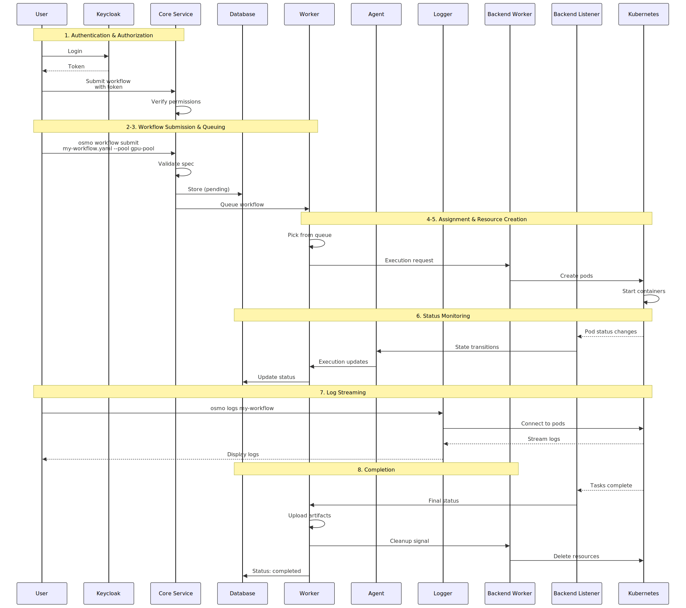

Architecture#
OSMO is a distributed platform that separates control plane functionality (workflow management, API, UI) from compute plane functionality (where workflows actually execute). This separation allows you to manage multiple compute clusters from a single control point and scale compute resources independently.
For a detailed view showing infrastructure, Kubernetes, and container-level components, see the comprehensive diagram below:

OSMO uses a control plane / compute plane architecture:
Control Plane |
Runs on the service cluster. Provides APIs, UI, authentication, workflow scheduling, and centralized management. |
Compute Plane |
Runs on one or more backend clusters. Executes user workflows and reports status back to the control plane. |
This separation provides several benefits:
Scalability: Add or remove compute backends without affecting the control plane
Isolation: Isolate different teams or projects on separate compute backends
Flexibility: Mix different hardware types (cloud, on-premises, edge devices)
Security: Keep workflow execution separate from management functions
Control Plane#
The OSMO Service runs on the service cluster (i.e., control plane) and provides the central management layer for the platform.
Central API server that handles workflow submission, validates user credentials, and manages authentication.
Manages workflow lifecycle from submission to completion and coordinates backend execution for all tasks.
Receives real-time status updates from compute backends to keep workflow information current.
Streams workflow logs to users in real-time from active workflows or cloud storage from completed ones.
Enables interactive access to running workflow containers for debugging, port forwarding, and file transfer.
Manages scheduled workflow operations including timeout handling and deferred cleanup tasks for all workflows.
Compute Plane#
The Backend Operator runs on each compute backend cluster (i.e., compute plane) and serves as the execution engine for workflows.
Key Architecture Points
Backend operators initiate connections to OSMO (not the other way around)
The service cluster does not need network access to backend clusters
This allows backends to be deployed behind firewalls and in restricted networks
Backends can be in different clouds, on-premises, or edge locations
Creates and manages Kubernetes resources for workflow execution on the compute backend clusters.
Monitors Kubernetes resources and reports all state changes back to the OSMO Service control plane.
Workflow Management#
Below diagram shows the interaction between the components when a workflow is submitted.
{kind=link}
See also
To learn more, refer to Understanding Task Execution
Authentication#
All API requests require authentication (specific paths can be excluded from authentication during service deployment)
Role-based access allows you group users by roles and determine pool access
Backend operators authenticate to the service using service accounts
See also
To learn more, refer to AuthN/AuthZ